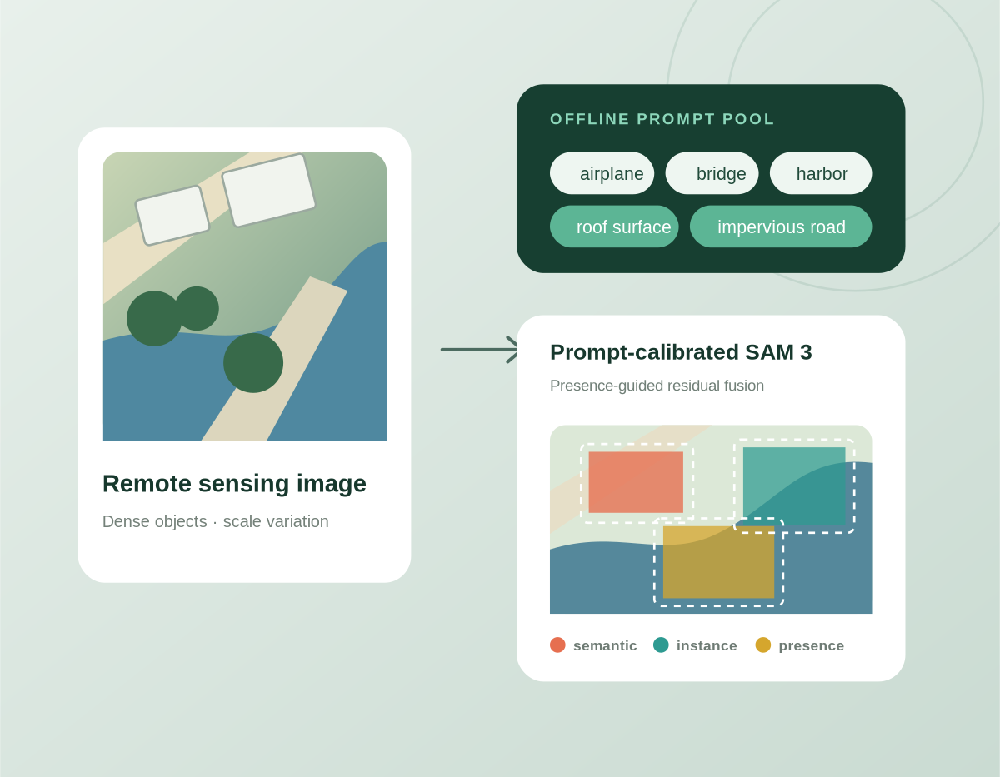

Open-Vocabulary Segmentation
Pixel-level recognition beyond a fixed label space for diverse aerial and satellite scenes.
OVSSSemantic SegmentationOpen World
I study remote sensing image intelligent interpretation, with a focus on vision foundation models, open-vocabulary segmentation, and robust geospatial perception.
I am a graduate student in Electronic Information at the School of Information Science and Technology, Yunnan Normal University. My work explores how general-purpose vision and vision-language foundation models can be adapted to complex Earth observation imagery.
My current research centers on training-free and label-efficient methods for open-vocabulary remote sensing segmentation, with particular interest in prompt reliability, robust inference, and deployable geospatial intelligence.
From pixel-level parsing to open-world understanding, the goal is accurate, robust, and efficient Earth observation intelligence.
Pixel-level recognition beyond a fixed label space for diverse aerial and satellite scenes.
Adapting large vision and vision-language models to remote sensing scale, density, and domain gaps.
Reliable prompt selection, corruption robustness, and low-overhead inference without retraining.
Connecting imagery, language, prompts, and spatial priors for richer geospatial reasoning.

IEEE GRSL 2026ProC-SAM3 calibrates the prompt interface of frozen SAM 3 through an offline prompt pool, cached text embeddings, presence-guided residual fusion, and peak-preserving class aggregation. Across eight remote sensing benchmarks, it reaches 56.1% average mIoU and improves over the previous best training-free method by 3.9 points.
Prompt-calibrated SAM 3 for training-free open-vocabulary semantic segmentation in remote sensing imagery.
View repositoryA prompt-calibrated Falcon-Perception pipeline evaluated across diverse remote sensing segmentation benchmarks.
View repositoryFeature evolution and representation analysis of SAM 3 for remote sensing images and semantic alignment.
View repositoryA curated and continuously updated collection of papers, code reproductions, and technical notes on remote sensing AI.
View repositoryI welcome research discussions, reproducibility collaborations, and open-source projects in intelligent Earth observation.